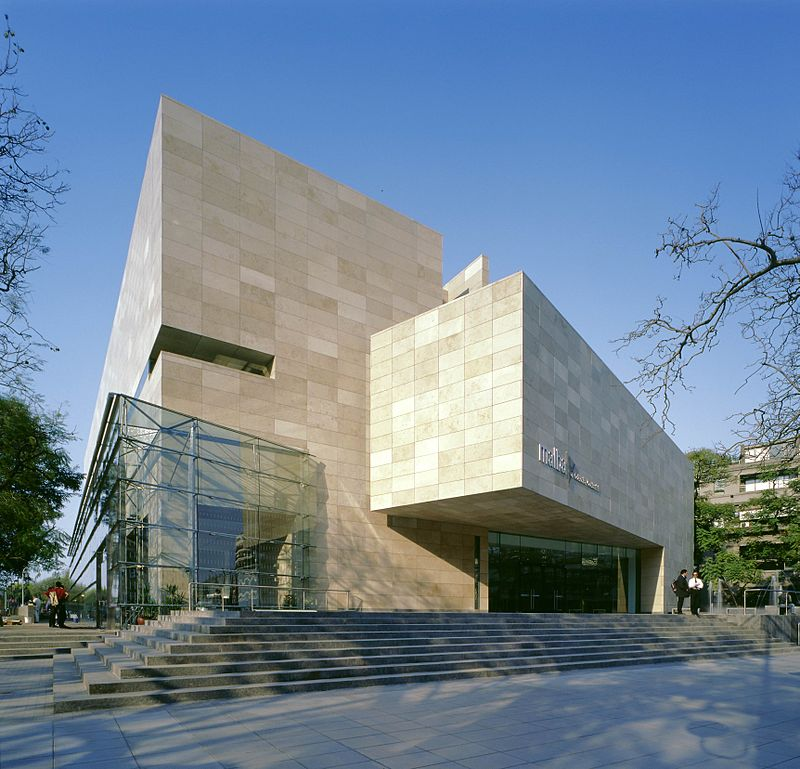
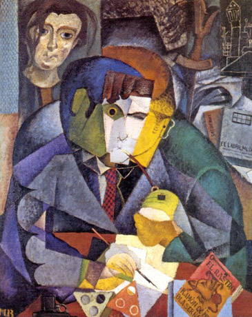

MALBA
El Museo de Arte Latinoamericano de Buenos Aires (Malba) Fundación Costantini, más conocido simplemente como MALBA, es un museo argentino fundado en septiembre de 2001. Fue creado con el objetivo de coleccionar,preservar, estudiar y difundir el arte latinoamericano desde principios del siglo XX hasta la actualidad. Es una institución privada sin fines de lucro que conserva y exhibe un patrimonio de aproximadamente 400 obras de los principales artistas modernos y contemporáneos de la región. El Malba combina un calendario de exposiciones temporales, con la exhibición estable de su colección institucional, y funciona simultáneamente como un espacio plural de producción de actividades culturales y educativas. Ofrece ciclos de cine, literatura y diseño y lleva adelante una tarea de educativa a través de programas destinados a diferentes tipos de públicos. En mayo de 2007, el Malba fue declarado Sitio de Interés Cultural por parte de la Legislatura de la Ciudad Autónoma de Buenos Aires, y en noviembre de 2008 recibió el Premio Konex de Platino como Mejor entidad cultural de la última década.Edificio
La sede del MALBA fue diseñada por los arquitectos cordobeses Atelman-Fourcade-Tapia, ganadores de un concurso de proyectos realizado en 1997. El jurado estuvo conformado por Norman Foster (inglés), César Pelli (argentino) y Mario Botta (suizo), arquitectos de prestigio a nivel internacional.12 Se trata de un edificio de estilo deconstructivista, una corriente de la arquitectura de moda en la década del '90, se caracteriza por la yuxtaposición de volúmenes formando piezas poliédricas, y el uso de ángulos agudos resaltando las aristas de los cuerpos.3 La dirección de obra estuvo a cargo del veterano estudio argentino MSGSSS, y el contratista fue Gerlach Campbell Construcciones S.A. En líneas generales, el museo se lee desde el exterior como un juego de volúmenes revestidos en piedra caliza española, con uno de vidrio verde tipo courtain wall. Desde el comienzo, se ha asociado más de una vez el aspecto exterior del edificio con el Centro Gallego de Arte Contemporáneo, proyectado por el arquitecto Álvaro Siza en 1993, ya que comparte hasta el material de revestimiento en sus fachadas.4 En el interior, el acceso principal a las colecciones es por el lateral este del edificio, mediante una serie de escaleras mecánicas que van recorriendo esa fachada vidriada a medida que suben.
Obras Destacadas
- 'Abaporu' (1928) Tarsila do Amaral
- 'Retrato de Ramón Gómez de la Serna' (1915) Diego Rivera 
- 'Autorretrato con chango y loro' (1942) Frida Kahlo

Programa de Adquisiciones
En 2004, el Malba dio inicio a un Programa de Adquisiciones con el objetivo de ampliar la colección hacia el arte contemporáneo y completar su patrimonio histórico. El programa es financiado por la Fundación Costantini, la Asociación Amigos de Malba y un grupo de particulares, fundaciones y empresas que generosamente participan de la convocatoria. A estos actores se suma la Feria de Galerías arteBA que, desde 2005, invita a Malba y a otros museos del país a participar en su programa Matching Funds, patrocinado por la empresa Zúrich. También se suma la Fundación American Express que dona una pieza en el marco de la feria Buenos Aires Photo. El Programa de Adquisiciones ya permitió sumar al museo 100 obras de los principales exponentes del arte contemporáneo local.
Donaciones y Comodatos
Desde su fundación, Malba ha buscado ampliar de manera constante su colección de arte argentino y latinoamericano, además de la calidad de obras ofrecidas al público. Las donaciones de particulares e instituciones así como la estrategia de solicitar obras en comodato, en préstamos por períodos de tiempo extendido, son fundamentales y necesarias para continuar con la expansión del patrimonio del museo. Las donaciones recibidas son expuestas al público con un reconocimiento especial hacia el donante, con la mención expresa del origen de la obra y su forma de ingreso al museo. Asimismo, los comodatos expresan en sala la colección de la que provienen y se integran oportunamente a las publicaciones de la colección.